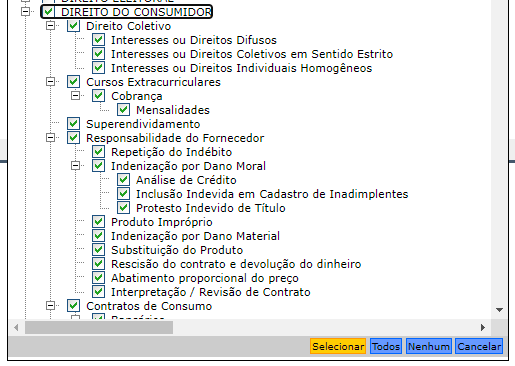

Relatório
Introdução
TODO
Referencial teórico
TODO
Objetivos
O objetivo principal da pesquisa é descrever quantitativamente os conflitos relacionados ao Direito do Consumidor no estado de São Paulo. Especificamente, desejamos:
- Comparar características de interesse nas reclamações extrajudiciais e processos judiciais, como volume, localização, tempo e taxa de resolução;
- Elaborar um diagnóstico quantitativo da situação do direito do consumidor no estado de São Paulo.
- Mostrar o potencial da jurimetria para identificar gargalos no sistema judiciário para propor políticas públicas.
Questões norteadoras da pesquisa
Considerando o referencial teórico
- Como se distribuem regionalmente as reclamações e processos no estado de São Paulo?
- Quais são os principais assuntos discutidos nas reclamações e processos?
- Houve algum impacto da pandemia na quantidade de reclamações e processos?
- Quais são os maiores litigantes e tipos empresariais mais comuns nas reclamações e processos?
- Qual é a taxa de resolução de conflitos nas reclamações e processos?
- Qual é o tempo típico de duração das reclamações e processos?
Metodologia
A pesquisa tem como objetivo principal analisar as diferentes formas que os conflitos consumeristas aparecem no mundo real. Para a parte empírica da pesquisa, no entanto, temos de fazer um recorte daquilo que não apenas é real, como também está disponível publicamente.
Nem todos os conflitos são registrados em bases públicas. Em algumas situações, os conflitos são registrados nos Serviços de Atendimento ao Cliente (SACs). Em outras situações, os conflitos são registrados em plataformas privadas, como o Reclame Aqui. Por esse motivo, vamos analisamos apenas os registros de conflitos que ficam registradas em plataformas dos poderes Judicário ou Executivo.
O fato de uma informação ser pública não significa que ela é diretamente acessível. Isso está relacionado com o conceito de transparância: as entidades que organizam os dados de interesse nem sempre disponibilizam os dados de forma ativa, apenas de forma passiva. Quando uma entidade pública segue os princípios de transparência ativa, ela disponibiliza os dados em formato aberto. Do contrário, quando a entidade não disponibiliza os dados em formato aberto, ela ainda assim deve seguir os princípios de transparência ativa, conforme a Lei de Acesso à Informação (Lei 12.527/2011, LAI).
A LAI permite que qualquer cidadão possa solicitar uma informação pública a qualquer entidade que faz parte do governo. A entidade tem o prazo de 20 dias para responder a solicitação. A resposta pode ser positiva ou negativa. Se a resposta for positiva, a entidade deve disponibilizar os dados em formato aberto. Se a resposta for negativa, a entidade deve justificar o motivo da negativa. Se a entidade não responder a solicitação, ela está sujeita a sanções administrativas e judiciais.
Como é possível notar, o uso da LAI pode ser bastante burocrático. É possível que o acesso aos dados demore meses, a depender da comunicação com o órgão. Em alguns casos, mesmo depois de muito tempo de espera, os dados acabam não sendo disponibilizados, por incapacidade técnica do órgão que detém acesso aos dados.
Por esse motivo, optamos, nesta pesquisa, por não utilizar a LAI. Vamos considerar apenas dados disponíveis publicamente em formato aberto ou dados públicos que podem ser acessados por mecanismos automatizados, como ferramentas de raspagem de dados (web scraping).
Feita essa ressalva, passamos a descrever as bases de dados utilizadas na pesquisa. Consideramos quatro bases de dados no total:
- Dados do Consumidor.gov.br, vinculado ao Ministério da Justiça (MJ),
- Dados do Sistema Nacional de Informações de Defesa do Consumidor (SINDEC), também vinculado ao MJ.
- Dados da consulta de sentenças do Tribunal de Justiça de São Paulo (TJSP)
- Dados da consulta de processos do TJSP, feita por amostragem.
A base do consumidor.gov.br pode ser acessada de forma aberta, diretamente pelo portal. Chamamos essa base de dados de CGOV. Os dados são disponibilizados mês a mês. Consideramos todos os meses entre jan/2019 e dez/2023. No total, são 1.203.114 reclamações em São Paulo, com as seguintes informações:
- file: Caminho ou nome do arquivo de onde os dados foram extraídos.
- regiao: Região geográfica do Brasil à qual a reclamação está associada.
- uf: Sigla do estado brasileiro relacionado à reclamação.
- cidade: Nome da cidade onde o consumidor que fez a reclamação está localizado.
- sexo: Gênero do consumidor, podendo ser “F” para feminino ou “M” para masculino.
- faixa_etaria: Faixa etária do consumidor, categorizada em intervalos de idade.
- data_finalizacao: Data em que a reclamação foi finalizada.
- tempo_resposta: Tempo que a empresa levou para responder à reclamação, expresso em dias.
- nome_fantasia: Nome fantasia da empresa contra a qual a reclamação foi feita.
- segmento_de_mercado: Categoria que indica o segmento de mercado ao qual a empresa pertence.
- area: Área de atuação da empresa dentro do contexto da reclamação.
- assunto: Tema central ou assunto principal da reclamação.
- grupo_problema: Categoria que agrupa o tipo de problema relatado na reclamação.
- problema: Descrição detalhada do problema relatado pelo consumidor.
- como_comprou_contratou: Meio pelo qual o consumidor adquiriu o produto ou serviço, podendo ser por telefone, internet, entre outros.
- procurou_empresa: Indica se o consumidor tentou resolver o problema diretamente com a empresa antes de registrar a reclamação, sendo “S” para sim e “N” para não.
- respondida: Informa se a reclamação recebeu uma resposta da empresa, sendo “S” para sim e “N” para não.
- situacao: Situação final da reclamação, indicando se foi resolvida ou não, e como foi avaliada pelo consumidor.
- avaliacao_reclamacao: Avaliação do consumidor em relação ao atendimento recebido e à solução do problema.
- nota_do_consumidor: Nota atribuída pelo consumidor à empresa, geralmente em uma escala de 1 a 5.
- total: Valor numérico associado à reclamação, cujo significado específico não está claro sem informações adicionais.
A base do SINDEC contém o registro de todos os atendimentos de consumidores nos Procons. Considerando somente o estado de São Paulo, são 2.347.020 atendimentos, com as seguintes informações:
- file: Caminho ou nome do arquivo de onde os dados foram extraídos.
- ano_atendimento: Ano em que o atendimento ao consumidor foi registrado.
- trimestre_atendimento: Trimestre do ano em que o atendimento foi realizado.
- mes_atendimento: Mês do ano em que o atendimento ao consumidor foi registrado.
- data_atendimento: Data e hora exatas em que o atendimento foi realizado.
- codigo_regiao: Código numérico que representa a região geográfica do Brasil associada ao atendimento.
- regiao: Nome da região geográfica do Brasil à qual o atendimento está associado.
- uf: Sigla do estado brasileiro relacionado ao atendimento.
- codigo_tipo_atendimento: Código numérico que representa o tipo de atendimento realizado.
- descricao_tipo_atendimento: Descrição textual do tipo de atendimento prestado ao consumidor.
- codigo_assunto: Código numérico que representa o assunto principal da demanda.
- descricao_assunto: Descrição textual do assunto principal da demanda.
- grupo_assunto: Categoria mais ampla à qual o assunto pertence.
- codigo_problema: Código numérico que identifica o problema específico relatado pelo consumidor.
- descricao_problema: Descrição detalhada do problema relatado.
- grupo_problema: Categoria mais ampla à qual o problema relatado pertence.
- sexo_consumidor: Gênero do consumidor, podendo ser “F” para feminino ou “M” para masculino.
- faixa_etaria_consumidor: Faixa etária do consumidor, categorizada em intervalos de idade.
- cep_consumidor: Código de Endereçamento Postal (CEP) associado ao consumidor, podendo estar vazio ou ser “NULL”.
- tipo_fornecedor: Código numérico que representa o tipo de fornecedor contra o qual a demanda foi registrada.
- razao_social_sindec: Razão social do fornecedor conforme registrado no Sindec.
- nome_fantasia_sindec: Nome fantasia do fornecedor conforme registrado no Sindec.
- cnpj: Número do Cadastro Nacional de Pessoa Jurídica do fornecedor.
- radical_cnpj: Primeiros oito dígitos do CNPJ, identificando a matriz da empresa.
- razao_social_rfb: Razão social do fornecedor conforme registrado na Receita Federal do Brasil.
- nome_fantasia_rfb: Nome fantasia do fornecedor conforme registrado na Receita Federal do Brasil.
- codigo_cnae_principal: Código da Classificação Nacional de Atividades Econômicas principal da empresa.
- descricao_cnae_principal: Descrição da atividade econômica principal da empresa conforme a CNAE.
A terceira e última fonte de dados são as informações do Judiciário. Infelizmente, os dados do judiciário não são abertos, sendo necessário utilizar técnicas de raspagem de dados para obter as informações desejadas. Como essas técnicas têm um custo computacional alto, tanto para desenvolvimento quanto para aplicação, decidimos restringir o escopo territorial da pesquisa para considerar somente o estado de São Paulo. Além disso, na consulta processual, consideramos apenas uma amostra de 1000 processos que serão analisados em maior detalhe.
A base do TJSP é obtida em dois passos. No primeiro passo, acessamos o site do banco de sentenças do TJSP, que contém informações de sentenças proferidas pelo TJSP. O site permite a consulta de sentenças por classe, por comarca, por data de disponibilização e por data de distribuição. No nosso caso, fizemos um levantamento considerando todos os assuntos da árvore de direito do consumidor, de acordo com a Figura Figure 1.
Além disso, consideramos apenas as classes processuais “Procedimento Comum Cível” e “Procedimento do Juizado Especial Cível”. A consulta retorna uma tabela com 1.053.853 decisões e 13 informações, descritas a seguir:
- file: Caminho ou nome do arquivo de onde os dados foram extraídos.
- processo: Número único de identificação do processo no Tribunal de Justiça.
- pagina: Número da página do documento dentro do processo.
- duplicado: Indicador lógico (verdadeiro/falso) identificando se o processo aparece mais de uma vez na base de dados (casos com mais de uma decisão).
- classe: Categoria ou tipo de processo, por exemplo, “Procedimento Comum Cível”.
- assunto: Tema ou assunto principal do processo.
- magistrado: Nome do magistrado ou juiz responsável pelo processo.
- comarca: Jurisdição ou área geográfica na qual o processo está registrado.
- foro: Nome do foro onde o processo está tramitando.
- vara: Nome da vara judicial na qual o processo está alocado.
- disponibilizacao: Data em que o documento foi disponibilizado pelo Tribunal.
- cd_doc: Código único de identificação do documento dentro do processo.
Em seguida, consultamos uma amostra de 10.000 casos, selecionados aleatoriamente a partir dos processos listados acima. A amostra foi realizada por conta do volume da base de dados, que é muito grande. Dos 10.000 casos consultados, 16 não retornaram nenhum resultado na consulta de processos. o resultado, então, foi uma base com 9.951 processos e 20 colunas:
- file: Caminho ou nome do arquivo HTML de onde os dados foram extraídos.
- processo: Número único de identificação do processo no Tribunal de Justiça.
- codigo_processo: Código único de identificação do processo, utilizado internamente pelo sistema do tribunal.
- digital: Indicador lógico (verdadeiro/falso) que mostra se o processo é digital ou físico.
- situacao: Situação atual do processo, como “Extinto”, “Em andamento” ou “Em grau de recurso”.
- area: Área do direito a qual o processo está relacionado, como “Cível”, “Criminal”, etc.
- assunto: Tema ou assunto principal do processo.
- classe: Categoria ou tipo de processo, como “Procedimento Comum Cível”.
- controle: Número de controle interno do processo.
- distribuicao: Data, hora e critério de distribuição do processo.
- foro: Nome do foro onde o processo está tramitando.
- juiz: Nome do juiz responsável pelo processo.
- local_fisico: Informação sobre a localização física do processo, incluindo data e local.
- outros_numeros: Outros números de identificação associados ao processo.
- valor_da_acao: Valor monetário envolvido na ação.
- vara: Nome da vara judicial na qual o processo está alocado.
- outros_assuntos: Outros temas ou assuntos relacionados ao processo.
- apensado_ao: Informação sobre se o processo está apensado a outro.
- partes: Lista contendo informações sobre as partes envolvidas no processo.
- movs: Lista contendo informações sobre as movimentações processuais.
Plano de análise
As análises foram organizadas de forma a responder às questões norteadoras de pesquisa. As análises utilizam técnicas de estatística descritiva (BUSSAB & MORETTIN, 2019), como gráficos de barras, séries de tempo, mapas gráficos de médias.
Infelizmente, nem todas as bases contêm informações suficientes para realizar as análises relacionadas a todas as questões norteadoras da pesquisa. O Quadro abaixo resume as bases de dados e análises realizadas para cada questão norteadora:
Abaixo está uma tabela estruturada para guiar a pesquisa baseada nas perguntas fornecidas, utilizando as bases de dados do CGOV, SINDEC, TJSP-Sentenças e TJSP-Processos:
| Questões Norteadoras da Pesquisa | Bases Utilizadas | Análises a Serem Realizadas |
|---|---|---|
| 1. Distribuição regional das reclamações e processos em São Paulo | CGOV, TJSP-Sentenças | - Mapeamento geográfico das reclamações e processos. |
| 2. Principais assuntos discutidos | CGOV, SINDEC, TJSP-Sentenças | - Análise de frequência dos assuntos para identificação dos temas mais recorrentes. |
| 3. Impacto da pandemia na quantidade de reclamações e processos | CGOV, SINDEC, TJSP-Sentenças | - Análise de série temporal para identificar tendências e variações ao longo do tempo. - Comparação dos períodos pré e pós-início da pandemia. |
| 4. Maiores litigantes e tipos empresariais mais comuns | CGOV, SINDEC, TJSP-Processos | - Identificação e ranking dos maiores litigantes. - Análise da frequência de diferentes tipos empresariais nas reclamações. |
| 5. Taxa de resolução de conflitos | CGOV, TJSP-Processos | - Cálculo da taxa de resolução baseando-se na proporção de decisões favoráveis ao consumidor e taxa de resoluções das reclamações. |
| 6. Tempo de duração das reclamações e processos | CGOV, TJSP-Processos | - Cálculo do tempo de duração desde o início até a conclusão/resolução. - Análise estatística para identificar a distribuição do tempo de duração. |
Uma limitação da análise realizada é o cruzamento de variáveis para avaliar diferentes questões norteadoras. Por exemplo, pode ser de interesse realizar análises dos tempos dos processos e taxa de resolução comparando diferentes tipos empresariais. Essas análises, no entanto, não foram realizadas, para não aumentar demasiadamente o tamanho do levantamento, que já é complexo.
Com o objetivo de permitir que novas análises sobre o tema sejam realizadas, todas as bases foram disponibilizadas publicamente. Elas estão disponíveis em um repositório do GitHub, uma plataforma de produção e gerstão de software que permite o acesso online e gratuito.
Análise de dados
Como se distribuem regionalmente as reclamações e processos no estado de São Paulo?
A Figure 2 mostra a taxa de reclamações por cem mil habitantes em cada município de São Paulo. Consideramos apenas municípios com mais de 100 reclamações. É possível notar uma concentração maior da taxa de reclamações na região metropolitana. Também é possível identificar uma concentração atípica no norte do estado, na região de Palmeira D’Oeste.

A Figure 3 mostra a taxa de processos por cem mil habitantes em cada comarca de São Paulo. Consideramos apenas comarcas com população maior que 10.000 e mais de 100 processos. É possível notar uma concentração maior no norte e noroeste do estado.

Quais são os principais assuntos discutidos nas reclamações e processos?
A Table 1 mostra os principais assuntos discutidos nas reclamações do CGOV. A maior parte dos casos são relacionados a propaganda/venda enganosa, reembolso/retenção de valores e cobrança indevida.
| problema | n | prop |
|---|---|---|
| Oferta não cumprida / serviço não fornecido/ venda enganosa / publicidade enganosa | 103932 | 8.64% |
| Dificuldade / atraso na devolução de valores pagos / reembolso / retenção de valores | 99644 | 8.28% |
| Cobrança indevida / abusiva para alterar ou cancelar o contrato | 82124 | 6.83% |
| Cobrança por serviço/produto não contratado / não reconhecido / não solicitado | 69713 | 5.79% |
| Não entrega / demora na entrega do produto | 50090 | 4.16% |
| SAC - Demanda não resolvida / não respondida / respondida após o prazo | 43963 | 3.65% |
| Dados pessoais ou financeiros consultados, coletados, publicados ou repassados sem autorização | 41502 | 3.45% |
| Cobrança de tarifas, taxas, valores não previstos / não informados | 41322 | 3.43% |
| Dificuldade de contato / demora no atendimento | 40359 | 3.35% |
| Produto danificado / não funciona - Dificuldade em trocar ou consertar no prazo de garantia | 26800 | 2.23% |
| Outros | 603665 | 50.18% |
A Table 2 mostra os principais assuntos discutidos nas reclamações do SINDEC. A maior parte dos casos são relacionados a problemas com cobrança, problemas com contrato e vício/má qualidade do produto ou serviço.
| grupo_problema | n | prop |
|---|---|---|
| Problemas com Cobranca | 880885 | 37.53% |
| Problemas com Contrato | 452664 | 19.29% |
| Vicio ou Ma Qualidade de Produto ou Servico | 288709 | 12.30% |
| Problemas na Entrega de Produtos | 225158 | 9.59% |
| Problemas com SAC | 149132 | 6.35% |
| Problemas na Oferta | 125989 | 5.37% |
| Problemas Diversos com Produtos e Servicos | 79424 | 3.38% |
| Outros | 66151 | 2.82% |
| Problemas com Garantia de Produtos | 41012 | 1.75% |
| Problemas com Desistencia de Compra ou Contratacao | 22743 | 0.97% |
| Problemas com Entrega de Documentos ao Consumidor | 15153 | 0.65% |
A Table 3 mostra os principais assuntos discutidos nos processos do TJSP. Infelizmente, a taxonomia dos tipos de casos não é a mesma quando comparada do CGOV. Os processos mais comuns são relacionados a indenização por dano material ou moral, sem especificar os motivos da indenização.
| assunto | n | prop |
|---|---|---|
| Indenização por Dano Moral | 186140 | 17.66% |
| Indenização por Dano Material | 139789 | 13.26% |
| Rescisão do contrato e devolução do dinheiro | 121496 | 11.53% |
| Práticas Abusivas | 94024 | 8.92% |
| Inclusão Indevida em Cadastro de Inadimplentes | 92499 | 8.78% |
| Interpretação / Revisão de Contrato | 58460 | 5.55% |
| Bancários | 46788 | 4.44% |
| Cancelamento de vôo | 31384 | 2.98% |
| Planos de Saúde | 29950 | 2.84% |
| Telefonia | 25575 | 2.43% |
| Outros | 227748 | 21.61% |
Houve algum impacto da pandemia na quantidade de reclamações e processos?
A Figure 4 mostra a quantidade de reclamações por mês no CGOV. É possível identificar um aumento considerável na quantidade de ações desde o início da pandemia, que passou a reduzir somente a partir do segundo trimestre de 2022.

A Figure 5 mostra a quantidade de reclamações por mês no CGOV, separando por grupo de problemas. É possível identificar picos de reclamações em diversos tipos de problemas na época da pandemia, especialmente problemas relacionados a cobrança de tarifas, dificuldade de troca, demora no atendmiento e demora na entrega.

A Figure 6 mostra a quantidade de reclamações por mês no SINDEC. É possível identificar um pico no início da pandemia, que foi estabilizado ao final de 2020 e reduziu drasticamente em meados de 2021, mantendo-se em um patamar mais baixo. A mudança abrupta em 2021 pode indicar que existem inconsistências na base de dados. Por esse motivo, não quebramos a análise por tipo de problema envolvido.

A Figure 7 mostra o volume de processos ao longo do tempo no TJSP. Descritivamente, é possível notar que a quantidade de processos em 2020 e 2021 sofreu uma leve queda. Importante mencionar o caráter sazonal da série, já que existem meses do ano que sistematicamente apresentam um volume maior ou menor de processos.

A Figure 8 mostra o volume de processos ao longo do tempo no TJSP, separando por assunto. É possível notar que a quantidade de decisões relacionadas a telefonia e planos de saúde vêm caindo significativamente. Além disso, é possível notar que o volume de decisões relacionadas a transporte aéreo aumentou no período da pandemia, mas os de cancelamento de vôo aumentaram apenas em 2022.

Quais são os maiores litigantes e tipos empresariais mais comuns nas reclamações e processos?
A Table 4 mostra as 10 empresas mais reclamadas na base do CGOV. As empresas mais reclamadas são as de telefonia, além do Serasa.
| nome_fantasia | n | prop |
|---|---|---|
| Claro Celular | 48370 | 4.02% |
| Serasa Experian | 47736 | 3.97% |
| Tim | 46831 | 3.89% |
| Vivo - Telefônica | 46079 | 3.83% |
| Mercado Livre | 39791 | 3.31% |
| NET | 35987 | 2.99% |
| Mercado Pago | 33271 | 2.77% |
| Vivo - Telefônica (GVT) | 31284 | 2.60% |
| Enel Distribuição São Paulo (Eletropaulo) | 30386 | 2.53% |
| Caixa Econômica Federal | 29351 | 2.44% |
| Outros | 814028 | 67.66% |
A Table 5 mostra os segmentos mais reclamados na base do CGOV. Somando todos os casos, os segmentos mais reclamados são bancos e empresas de telefonia, que concentram quase metade das reclamações.
| segmento_de_mercado | n | prop |
|---|---|---|
| Bancos, Financeiras e Administradoras de Cartão | 293474 | 24.39% |
| Operadoras de Telecomunicações (Telefonia, Internet, TV por assinatura) | 268074 | 22.28% |
| Comércio Eletrônico | 114915 | 9.55% |
| Transporte Aéreo | 79798 | 6.63% |
| Empresas de Intermediação de Serviços / Negócios | 57568 | 4.78% |
| Bancos de Dados e Cadastros de Consumidores | 55412 | 4.61% |
| Empresas de Pagamento Eletrônico | 54785 | 4.55% |
| Energia Elétrica | 41654 | 3.46% |
| Viagens, Turismo e Hospedagem | 32668 | 2.72% |
| Fabricantes - Eletroeletrônicos, Produtos de Telefonia e Informática | 30694 | 2.55% |
| Outros | 174072 | 14.47% |
A Table 6 mostra as 10 empresas mais reclamadas na base do SINDEC. As empresas mais reclamadas são a ENEL e as empresas de telefonia.
| nome_fantasia_sindec | n | prop |
|---|---|---|
| ENEL DISTRIBUICAO SAO PAULO | 135536 | 7.37% |
| VIVO/TELEFONICA | 56150 | 3.05% |
| CLARO / NET / EMBRATEL / CLAROTV | 46337 | 2.52% |
| TIM CELULAR / TIM SA / CELULAR TIM / TIM | 29430 | 1.60% |
| PONTO FRIO / CASAS BAHIA / EXTRA.COM.BR / PONTOFR | 25498 | 1.39% |
| SKY | 22277 | 1.21% |
| SABESP | 20612 | 1.12% |
| SANTANDER | 17569 | 0.96% |
| Outros | 1485781 | 80.78% |
A Table 7 mostra os segmentos mais reclamados na base do SINDEC, usando a Classificação Nacional das Atividades Econômicas (CNAE) como base. Somando todos os casos, os segmentos mais reclamados são bancos e empresas de telefonia, similar ao encontrado na base CGOV.
| descricao_cnae_principal | n | prop |
|---|---|---|
| BANCOS MULTIPLOS, COM CARTEIRA COMERCIAL | 247458 | 13.78% |
| TELEFONIA MOVEL CELULAR | 179023 | 9.97% |
| SERVICOS DE TELEFONIA FIXA COMUTADA - STFC | 175933 | 9.80% |
| DISTRIBUICAO DE ENERGIA ELETRICA | 118823 | 6.62% |
| COMERCIO VAREJISTA ESPECIALIZADO DE ELETRODOMESTICOS E EQUIPAMENTOS DE AUDIO E VIDEO | 42739 | 2.38% |
| LOJAS DE DEPARTAMENTOS OU MAGAZINES | 38243 | 2.13% |
| AGENCIAS DE VIAGENS | 32823 | 1.83% |
| SOCIEDADES DE CREDITO, FINANCIAMENTO E INVESTIMENTO - FINANCEIRAS | 32812 | 1.83% |
| Outros | 927717 | 51.67% |
No TJSP, infelizmente, os dados de partes não são padronizados nem apresentam a informação do segmento. Fizemos uma padronização básica dos nomes (retirando acentos, colocando em caixa alta e ajustando pontuação), mas uma padronização e segmentação completa das empresas poderá ser objeto de futuras pesquisas. A Table 8 mostra a proporção de processos (na amostra de processos consultados) relacionados a cada empresa analisada. A empresa mais reclamada é a Telefonica (Vivo), seguida por grandes bancos, e depois pela Claro.
| parte | n | prop |
|---|---|---|
| Outros | 9581 | 80.66% |
| TELEFONICA BRASIL SA | 442 | 3.72% |
| BANCO BRADESCO SA | 323 | 2.72% |
| BANCO SANTANDER BRASIL SA | 229 | 1.93% |
| BANCO BMG SA | 215 | 1.81% |
| BANCO DO BRASIL SA | 194 | 1.63% |
| CLARO SA | 192 | 1.62% |
| TAM LINHAS AEREAS SA LATAM AIRLINES BRASIL | 191 | 1.61% |
| BANCO PAN SA | 186 | 1.57% |
| COMPANHIA PAULISTA DE FORCA E LUZ | 177 | 1.49% |
| ELETROPAULO METROPOLITANA ELETRICIDADE DE SAO PAULO SA | 148 | 1.25% |
Qual é a taxa de resolução de conflitos nas reclamações e processos?
A Table 9 mostra a taxa de resolução de reclamações no CGOV. Do total de reclamações, 47% não são avaliadas. Das que foram avaliadas, no entanto, temos que 58% das reclamações são resolvidas.
| avaliacao_reclamacao | n | prop |
|---|---|---|
| NÃO AVALIADA | 564902 | 46.95% |
| RESOLVIDA | 368209 | 30.60% |
| NÃO RESOLVIDA | 270003 | 22.44% |
No judiciário, apresentamos as proporções de cada tipo de decisão. Essas informações não estão padronizadas no TJSP; para extrair esse dado, aplicamos palavras-chave às movimentações do processo. Primeiro, identificamos as movimentações que apresentam alguma informação sobre acordo ou procedência da ação. Em seguida, classificamos as movimentações como sendo uma movimentação de transação de acordo ou decião de mérito. Finalmente, classificamos a decisão de cada processo, de acordo com os tipos de movimentação existentes. O resultado é o observado n Table 10. Primeiro, é interessante notar a taxa de quase 60% de casos que acabam em acordo. Isso significa que mais da metade dos casos, apesar de serem judicializados, acabam em composição amigável, um indicativo de que tais casos poderiam ter evitado a via judicial. Dentro das decisões de mérito, a decisão improcedente é a mais comum, mas a soma das proporções de parcialmente procedente e procedente dá ma proporção maior que a de improcedentes.
| decisao | n | prop |
|---|---|---|
| Acordo | 5960 | 60.12% |
| Improcedente | 1543 | 15.57% |
| Parcial | 1460 | 14.73% |
| Procedente | 950 | 9.58% |
Qual é o tempo típico de duração das reclamações e processos?
A Figure 9 mostra o tempo de resposta nas reclamações no CGOV. A média de tempo está entre 6 e 7 dias, enquanto a mediana é de 8 dias.

A Figure 10 mostra o tempo dos processos no TJSP separados por classe processual. A média de tempo está entre 10 e 11 meses, enquanto a mediana está entre 5 e 6 meses. Ou seja, o tempo dos processos do TJSP é muito maior do que os tempos de resposta do CGOV.

Outras análises não relacionadas às questões norteadoras
A Figure 11 mostra os valores dos processos no TJSP. É possível notar que grande parte dos casos têm valores menores que 20 salários mínimos, mesmo nos casos de classe procedimento comum cível.

Discussão
TODO
Conclusão
TODO